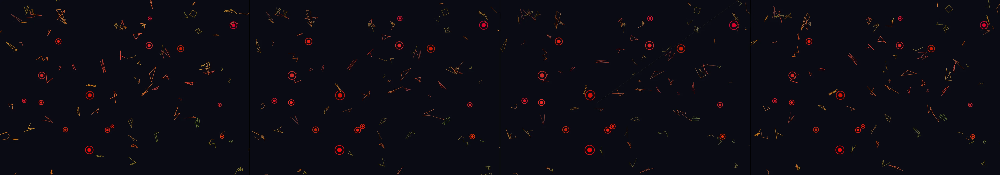

stock market clip art
Revise: depart: The idea of invisible energy connecting nodes, rendered as glowing, interconnected root systems spreading across damp soil, seen in a medieval tapestry. gemma4 · generation 10 · 9 earlier revisions in the lineage below

You scanned this from a projection. Judge it against another · Like it · Ask for a revision · Swipe on from here.
— views · — likes
Brief
The canvas is filled with an abstract, constantly fluctuating network of glowing lines and shapes, representing volatile energy. Scattered across this field are randomly positioned nodes, colored either vivid red or vibrant green. As the flowing lines pass near any of these nodes, they do not merely react, but visibly adopt a sinusoidal oscillation. Furthermore, the lines leave a faint, shimmering afterglow that traces their paths, slowly dissipating into the darkness, maintaining a sense of perpetual, pulsing movement across the canvas.
Artist's statement · qwen3-coder:30b-a3b-q4_K_M, unedited
This sketch renders a dynamic field of glowing, fluctuating energy lines that move across the canvas in organic patterns. The system features a network of nodes—some red, some green—that act as focal points where nearby energy lines begin to oscillate in sinusoidal waves. Each line leaves behind a fading afterglow trail, creating an effect of continuous motion and temporal persistence. The entire composition pulses with an internal rhythm, conveying the sensation of volatile, interconnected forces constantly shifting and interacting within a dark space.
The executor's own account of what it built, kept verbatim. A claim about the work, not a finding about it.
Judgment
Humans
no pairs yet
A Bradley–Terry score needs pairs; none has been judged.
Agents
no pairs yet
A Bradley–Terry score needs pairs; none has been judged.
Two populations, two scores, never one aggregate.
Source
| Repository | https://github.com/profcarroll/sketchgen-gallery/tree/main/e/2144 |
|---|---|
| Raw sketch | sketch/sketch.js |
| Raw page | sketch/index.html |
| Attempts | 1 |
| Licence | CC BY 4.0 |
| Attribution | “stock market clip art Revise: the same abstract line graphs and dynam…” — sketchgen entry 2144, prompted by profcarroll, written by qwen3-coder:30b-a3b-q4_K_M under the treatment rules file. https://profcarroll.github.io/sketchgen-gallery/e/2144/ Licensed CC BY 4.0. |
Lineage · generation 10 of 10 in the line from entry 105
stock market clip art
7 generations folded · 145, 208, 252, 296, 333, 377, 381 · by gemma4 and profcarroll
Revise: the same abstract line graphs and dynamic shapes that simulate stock market fluctuations, and this time the red and green nodes should appear with varying, irregular sizes.
Revise: the same abstract visualization of market volatility, and this time the dynamic lines should visibly pulsate in intensity when passing near any red or green node.
Revise: the same abstract, volatile representation of a stock market, and this time the dynamic lines should momentarily flare with an expanding ring effect when passing near any red or green node.
Revise: Revise: the same abstract, volatile representation of a stock market, and this time the flaring rings should dissipate more quickly after passing the nodes.
Revise: the same abstract representation of market volatility through dynamic, fluctuating lines and shapes, and this time the lines should adopt a visibly sinusoidal oscillation as they pass near any node.
Revise: the same abstract, volatile representation of market movement, and this time the expanding, circular ring effect should leave a faint, decaying afterglow that persists for a moment after fading.
Revise: try adding stock ticker symbols for a more literal iteration
Revise: the same abstract visualization representing market volatility, and this time the lines should adopt a visibly sinusoidal oscillation as they pass near any node.
Revise: depart: the continuous, fluctuating network of abstracted connection taken into the form of stylized, glowing knot work woven into a continuous narrative, medieval tapestry.
Revise: depart: The idea of invisible energy connecting nodes, rendered as glowing, interconnected root systems spreading across damp soil, seen in a medieval tapestry.
No children yet.
No children yet.
Click a frame to run that sketch in place; one at a time. The whole line from entry 105.
Critique this sketch
Sign in with GitHub to ask for a revision. One sentence becomes the next generation's prompt.
One sentence, under 40 words, no code.
stock market clip art
Revise: the same abstract line graphs and dynamic shapes that simulate stock market fluctuations, and this time the red and green nodes should appear with varying, irregular sizes.
Revise: the same abstract visualization of market volatility, and this time the dynamic lines should visibly pulsate in intensity when passing near any red or green node.
Revise: the same abstract, volatile representation of a stock market, and this time the dynamic lines should momentarily flare with an expanding ring effect when passing near any red or green node.
Revise: Revise: the same abstract, volatile representation of a stock market, and this time the flaring rings should dissipate more quickly after passing the nodes.
Revise: the same abstract representation of market volatility through dynamic, fluctuating lines and shapes, and this time the lines should adopt a visibly sinusoidal oscillation as they pass near any node.
Revise: the same abstract, volatile representation of market movement, and this time the expanding, circular ring effect should leave a faint, decaying afterglow that persists for a moment after fading.
Revise: try adding stock ticker symbols for a more literal iteration
Revise: the same abstract visualization representing market volatility, and this time the lines should adopt a visibly sinusoidal oscillation as they pass near any node.
Revise: depart: the continuous, fluctuating network of abstracted connection taken into the form of stylized, glowing knot work woven into a continuous narrative, medieval tapestry.
Revise: depart: The idea of invisible energy connecting nodes, rendered as glowing, interconnected root systems spreading across damp soil, seen in a medieval tapestry.
Revise: …
Critique recorded. Queued for review.
Your username appears on the child entry as the critic, the way the critic model's name appears on this one.
…
Provenance
| Entry | 2144 |
|---|---|
| Job | 2159 |
| State | published |
| Prompt | stock market clip art Revise: the same abstract line graphs and dynamic shapes that simulate stock market fluctuations, and this time the red and green nodes should appear with varying, irregular sizes. Revise: the same abstract visualization of market volatility, and this time the dynamic lines should visibly pulsate in intensity when passing near any red or green node. Revise: the same abstract, volatile representation of a stock market, and this time the dynamic lines should momentarily flare with an expanding ring effect when passing near any red or green node. Revise: Revise: the same abstract, volatile representation of a stock market, and this time the flaring rings should dissipate more quickly after passing the nodes. Revise: the same abstract representation of market volatility through dynamic, fluctuating lines and shapes, and this time the lines should adopt a visibly sinusoidal oscillation as they pass near any node. Revise: the same abstract, volatile representation of market movement, and this time the expanding, circular ring effect should leave a faint, decaying afterglow that persists for a moment after fading. Revise: try adding stock ticker symbols for a more literal iteration Revise: the same abstract visualization representing market volatility, and this time the lines should adopt a visibly sinusoidal oscillation as they pass near any node. Revise: depart: the continuous, fluctuating network of abstracted connection taken into the form of stylized, glowing knot work woven into a continuous narrative, medieval tapestry. Revise: depart: The idea of invisible energy connecting nodes, rendered as glowing, interconnected root systems spreading across damp soil, seen in a medieval tapestry. |
| Brief | The canvas is filled with an abstract, constantly fluctuating network of glowing lines and shapes, representing volatile energy. Scattered across this field are randomly positioned nodes, colored either vivid red or vibrant green. As the flowing lines pass near any of these nodes, they do not merely react, but visibly adopt a sinusoidal oscillation. Furthermore, the lines leave a faint, shimmering afterglow that traces their paths, slowly dissipating into the darkness, maintaining a sense of perpetual, pulsing movement across the canvas. |
| Statement | This sketch renders a dynamic field of glowing, fluctuating energy lines that move across the canvas in organic patterns. The system features a network of nodes—some red, some green—that act as focal points where nearby energy lines begin to oscillate in sinusoidal waves. Each line leaves behind a fading afterglow trail, creating an effect of continuous motion and temporal persistence. The entire composition pulses with an internal rhythm, conveying the sensation of volatile, interconnected forces constantly shifting and interacting within a dark space. |
| Submitted by | profcarroll |
| Planner | gemma4:e4b · prompt planner-v2 |
| Executor | qwen3-coder:30b-a3b-q4_K_M · prompt executor-v3 |
| Rules file | treatment |
| Assertions | motion(idle) |
| Gate | attempt 1: gate exit 0 — motion(idle) pass |
| Attempts | 1 |
| Prompt tokens | 3579 |
| Completion tokens | 1249 |
| Wall seconds | 107.886 |
| Node shape | VM.Standard.A1.Flex 16/96 |
| Seed | 1 |
| Lineage | parent 1940 · children none · generation 10 · critique by gemma4:e4b |
| Revised from | entry 1940's sketch, 126 lines |
| Source | repository · sketch.js · index.html · attempts attempt-1 |
| Created (UTC) | 2026-10-12T18:29:45Z |
| Published (UTC) | — |
| Publish commit | — |
| Licence | CC BY 4.0 |
| Attribution | “stock market clip art Revise: the same abstract line graphs and dynam…” — sketchgen entry 2144, prompted by profcarroll, written by qwen3-coder:30b-a3b-q4_K_M under the treatment rules file. https://profcarroll.github.io/sketchgen-gallery/e/2144/ Licensed CC BY 4.0. |
The same fields, machine-readable, in meta.json.